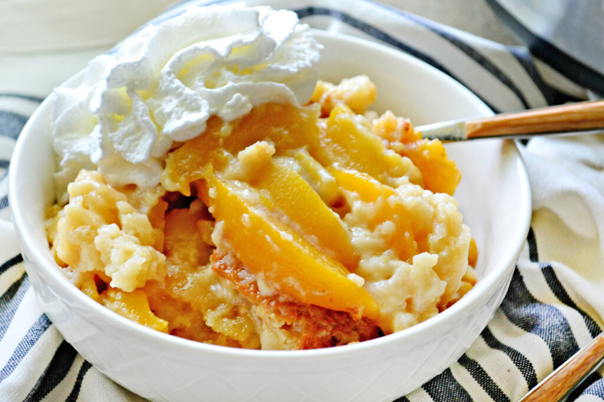

Peach Cobbler

Description
A slow cooker is easy. That’s why everyone loves them. For lazy cooks, like myself, slow cookers are a cook’s best friend. The only real challenge is getting it out of the cabinet. And if you like to bake, this slow cooker peach cobbler recipe is one of the easiest recipes you could make.
Ingredients
- 8 cups sliced fresh or frozen peaches, thawed
- ½ cup white sugar
- cooking spray
- 1 (15.25 ounce) package white cake mix
- ½ cup butter, cut into 8 pieces
Steps
- Combine peaches and sugar in a medium bowl. Stir well and let stand for 5 minutes.
- Liberally spray a slow cooker with cooking spray.
- Stir peaches once more and add to the prepared slow cooker. Sprinkle cake mix evenly over the peaches; don't stir. Distribute butter pieces evenly over cake mix.
- Cover and cook on High until cake is golden and bubbly around the edges, about 3½ hours. Turn off slow cooker and let stand 15 minutes before serving.